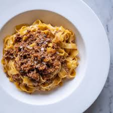

Ragu alla Bolognese

Description
Bolognese sauce, known in Italian as "Ragù alla Bolognese," is a traditional meat-based sauce from Bologna. Contrary to popular belief, it is not primarily a tomato sauce; instead, its rich flavor comes from ingredients like pancetta, veal, and beef, which are slow-cooked to achieve a savory taste reminiscent of stewed meat.
On October 17, 1982, the Bologna chapter of the 'Accademia Italiana della Cucina' officially registered the traditional recipe for Ragù Bolognese with the Bologna Chamber of Commerce. While the following recipe closely follows this classic version, there are slight modifications to enhance its flavor.
Ingredients
- 125g pancetta (or bacon cubes)
- carrot (diced)
- 2 celery stalks (diced)
- 1 onion (finely chopped)
- 200g ground beef
- 200g ground veal (optional; otherwise, use a total of 400g ground beef)
- 150ml white wine
- 500g peeled tomatoes (canned is acceptable)
- 1 beef bouillon cube
- Salt and pepper to taste
- Olive oil
- A splash of milk
Steps
- Dice the onion, carrot, and celery into small cubes (approximately half a centimeter).
- Heat a layer of olive oil in a large braising pan.
- Once the oil is hot, add the diced vegetables and pancetta. Sauté together for about 10 minutes on low heat until the vegetables are soft.
- Add the ground beef and veal, cooking for another 10 minutes on low heat until the meat is cooked through. Stir regularly to crumble the meat. Season with salt and pepper.
- Pour in the white wine. Let it simmer on low heat until the liquid has evaporated.
- Chop the tomatoes and add them to the pan. Crumble in the bouillon cube as well.
- Bring the mixture to a boil and let the sauce reduce. Stir regularly to prevent burning.
- It's recommended to place the pan with the sauce in an oven preheated to 150°C. This allows the sauce to simmer gently, which is crucial for developing the right flavor.
- After 2 to 3 hours, remove the pan from the oven. If necessary, further reduce the sauce over medium heat. Stir in a splash of milk and let it simmer briefly.
Home